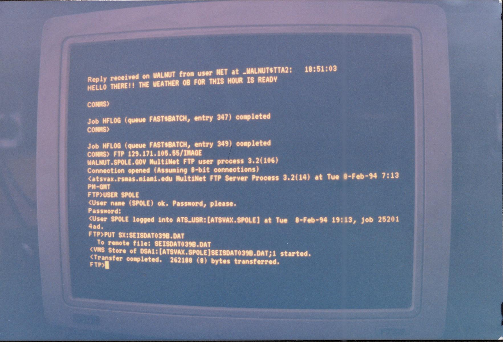

The First Internet
"The Internet may fairly be regarded as a never-ending worldwide conversation." - supreme judge statement on considering first amendment rights for Internet users.
On a cold war kind of day, in swinging 1969, work began on the ARPAnet, grandfather to the Internet. Designed as a computer version of the nuclear bomb shelter, ARPAnet protected the flow of information between military installations by creating a network of geographically separated computers that could exchange information via a newly developed protocol (rule for how computers interact) called NCP (Network Control Protocol).
See more in:About.com
Home